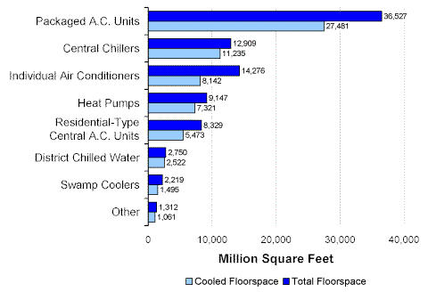

Cooling Equipment
The total amount of floorspace in cooled commercial buildings was 58,474 million square feet (or 87 percent of 67,338 million square feet the total floorspace in all commercial buildings). However, not all of the floorspace within cooled buildings was actually cooled. A total of 42,420 million square feet was cooled (73 percent of the floorspace in cooled buildings, and 63 percent of the floorspace in all buildings).
Packaged air conditioning units were the most used type of cooling equipment in commercial buildings (Figure 1). That type was used for more than twice as much cooled floorspace as the second-most used system (central chillers). Within commercial buildings that were cooled, two-thirds or more floorspace was actually cooled by each of the equipment types, with the exception of individual air conditioning systems. Only 57 percent of floorspace in those buildings was cooled (8,142 million of 14,276 million square feet of floorspace).
Figure 1. Total Floorspace and Cooled Floorspace by Type of Cooling Equipment, 1999 Energy Information Administration
Commercial Buildings Energy Consumption Survey
The average size of cooled commercial buildings was 16,400 square feet per building (Figure 2). Buildings that used two equipment types—central chillers and district chilled water—were significantly larger than average (99,300 square feet and 55,000 square feet, respectively).
Figure 2. Average Building Size by Type of Cooling Equipment, 1999Energy Information Administration
Commercial Buildings Energy Consumption Survey
Packaged air conditioning units were the main cooling system for 20,504 million square feet of cooled floorspace, more than twice the main use of central chillers, the next most used system (Figure 3). Those two systems plus district chilled water systems, where used, were most often used as the main cooling system. Packaged units were used for main use for 75 percent of cooled floorspace, chillers for 86 percent of cooled floorspace, and district chilled water for 89 percent of cooled floorspace. Of the other cooling systems, only residential-type central air conditioning systems exceeded 50 percent for main use.
Figure 3. Cooling Equipment Used for Main and Other Use, Amount of Cooled Floorspace, 1999Energy Information Administration
Commercial Buildings Energy Consumption Survey
Return to:
“End-Use Equipment”
Specific questions may be directed to:
Alan Swenson
alan.swenson@eia.doe.gov
Release date: May 21, 2002
http://www.eia.gov/consumption/commercial/data/archive/cbecs/char99/cool_equip.html
If you are having any technical problems with this site, please contact the EIA webmaster at wmaster@eia.doe.gov.